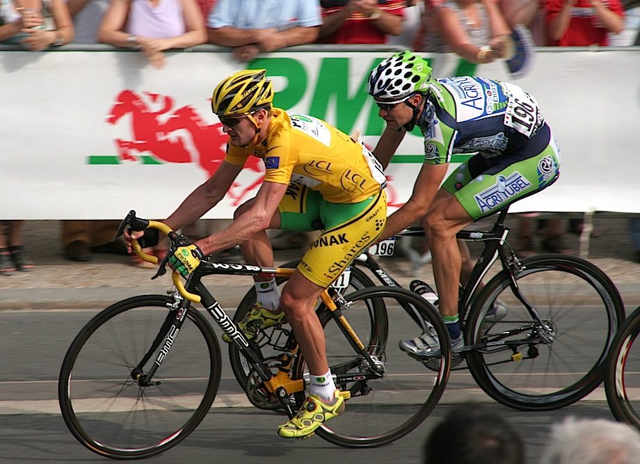

A drug is any substance that changes the natural functioning of the body, whether mildly or extremely.
A common source of drugs, going back thousands of years, is plants. Morphine/heroin come from poppies; caffeine comes from the coffee plant.
Green tea leaves brewed as a drink contain mild, legal drugs – theanine and caffeine – that stimulate the brain
Some drugs are used as medicines, others are used for pleasure. Some of these medical drugs (e.g. strong painkillers) and pleasure drugs (e.g. alcohol) can be addictive.
Some pleasure drugs are legal and some are illegal. ‘Hard’ drugs like ecstasy, heroin and cocaine (also called ‘class A’ drugs in the UK) are illegal because they can be very harmful and addictive. Yet even some legal pleasure drugs like alcohol and tobacco can be harmful and addictive.
Regular consumption of large amounts of some drugs may lead to addiction. You are addicted to a drug when you no longer function well without it. The drug has changed your body chemistry: if you suddenly stop taking it, you may suffer from withdrawal symptoms.
Hard illegal drugs can cause severe health problems and are an expensive habit; sharing needles can spread diseases like HIV/AIDS.
Cannabis is an illegal drug in the UK, even though some people think its effects are relatively mild and that it is not addictive. There is evidence to suggest that smoking cannabis scan lead to mental illness in some people.
Recent international medical research suggests cannabis may help to relieve pain; it could be taken as a pill and would not need to be smoked. But the doses involved, and the possible side effects, need careful study.
Some medical drugs are potentially addictive and may have side effects, but it is still better overall to prescribe them. The effects of not taking them – much poorer health – would be worse. The doses given need to be controlled very carefully.
In the UK, deaths from drug addiction are overwhelmingly caused by legal drugs. Deaths caused by illegal drugs are in the very low thousands, while deaths from tobacco and alcohol add up to about 100 000 cases per year.
Bodily effects of drugs (Edexcel)
Mild legal drugs like caffeine are stimulants. They increase the speed of nerve impulses across synapses (neurotransmission), temporarily making us more alert and responsive.
Hallucinogens (e.g. LSD) distort normal thought: the user perceives the world around them differently. Hallucinogens can cause anxiety and an inability to make rational decisions.
A 3D representation of LSD, showing carbon atoms (black), hydrogen (white), nitrogen (blue) and oxygen (red)
In special circumstances, some very addictive drugs are used in careful measures in UK hospitals to relieve severe pain. Morphine, a drug similar to heroin, is one of these. It blocks nerve impulses and dulls pain.
Effects of alcohol
Alcohol is a depressant: this term needs to be understood carefully. In the short-term (within a few minutes) it slows down our reactions: it increases our reaction times. It depresses the brain’s activity.
In the short-term alcohol can relax and disinhibit us; it can make us feel more sociable but it can also make us take more risks. In the long term, alcohol use and abuse can cause memory loss and liver damage; in extreme cases this can lead tofile://localhost/Users/bearodriguez/Dropbox/damian/book/ScienceA-3.2.html death from cirrhosis of the liver.
Alcohol use affects society as a whole, not just individual alcohol users. In the short-term it can cause traffic accidents, and people who are usually calm can become violent. In the long-term it can cause family breakdown, and is a significant cost to the NHS.
This map shows 2004 World Health Organization (WHO) data on alcohol use. The key represents litres of pure alcohol consumed per year
Drugs in sport (AQA)
Different drugs can enhance the sporting performance of the body, and many of them are banned. For example, anabolic steroids build muscle mass; they are popular with body builders. Even common mild stimulants like caffeine are only permitted in modest doses.
Red blood cells carry oxygen to the muscles. Exercising the body makes more red blood cells, and these enhance sporting performance.
A hormone called EPO helps the body make red blood cells. A synthetic version of EPO can be added to the body. Until recently, this version was difficult to detect, because it was so similar in appearance to natural EPO.
An athlete’s blood can also be taken out of the body and put back after ‘doping’ it with more red blood cells. This is not quite the same as taking a new drug not normally found in the body. The ethical question now becomes, what level of red blood cells in the body is ‘unnatural’?
If every top athlete in ‘endurance’ sports like cycling adopted these performance-enhancing techniques, a ‘level playing field’ might be created. Cheating might then not make so much difference: the overall ‘best’ athlete may still win. So why do we feel uneasy about this?
Our unease about ‘drugs’ in sport may be related to our general perceptions about the word drugs: changing the natural functions of the body in some way, especially long term, may do more harm than good.

When Floyd Landis led the pack into Paris on 23 July 2006, he thought he had won the Tour de France: the world’s toughest bike race. But shortly afterwards he was stripped of his title: tests confirmed he had ‘unacceptable’ levels of a natural hormone in his body. This suggested he had cheated to win